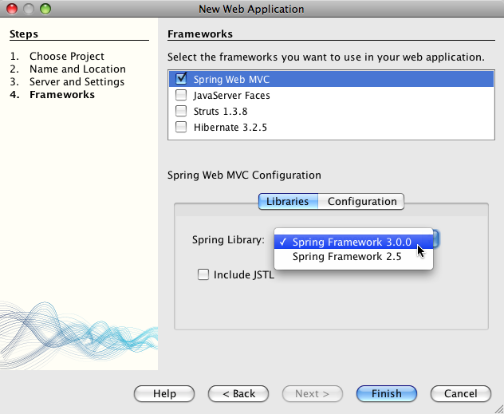
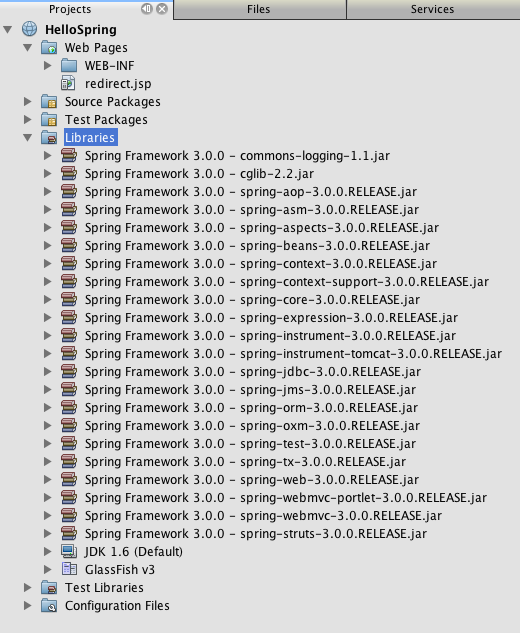

Spring Web MVC 入門
このドキュメントでは、Spring Framework を使用して、簡単な Web MVC アプリケーションを構築する方法を説明します。このアプリケーションでは、ユーザーが自分の名前をテキストフィールドに入力して「OK」をクリックすると、名前が返され、2 ページ目に挨拶メッセージとともにその名前を表示できます。
Spring Framework は普及しているオープンソースアプリケーションフレームワークで、Java EE 開発に役立ちます。このフレームワークはコンテナ、コンポーネント管理フレームワーク、および Web ユーザーインタフェース、トランザクション、持続性のためのスナップインサービスセットから構成されます。Spring Framework の一部は Spring Web MVC です。これは Web アプリケーション作成用の拡張可能な MVC フレームワークです。
IDE には Spring Framework 3.0 および 2.5 のサポートが組み込まれています。フレームワークライブラリは IDE とともにパッケージ化されており、フレームワークを選択するときに、プロジェクトクラスパスに自動的に追加されます。また、Spring Web MVC DispatcherServlet の命名やマッピングなどの構成設定が用意されています。JSTL ライブラリは、プロジェクト作成時に任意で登録できます。Spring XML Bean 構成ファイルのサポートも用意されており、これには次の機能が含まれます。
- コードの補完。Spring XML 構成ファイル内の Java クラスや Bean 参照に対して起動します。
- ナビゲーション。Spring Bean 定義に含まれる Java クラスやプロパティーのハイパーリンクや、ほかの Spring Bean 参照へのハイパーリンク。
- リファクタリング。Spring XML 構成ファイル内の Java クラスへの参照の名前の変更。
Spring Framework の詳細については、http://www.springsource.org/ を参照してください。Spring Framework の成果物の動作方法と、アプリケーション内のほかのオブジェクトとの連携方法に関するさらに詳しい説明については、Spring Framework リファレンスドキュメントまたは Spring Framework API ドキュメントを参照してください。
目次

このチュートリアルを完了するには、次のソフトウェアとリソースが必要です。
注:
- IDE の Java インストール版では、IDE とともに GlassFish サーバーをインストールして登録することもできます。
- プロジェクトを、正常に機能するソリューションと比較する必要がある場合は、サンプルアプリケーションをダウンロードできます。
Spring Web MVC サポートを使用した新規プロジェクトの設定
Spring Web MVC スケルトンプロジェクトの作成
Spring Framework を使用し、まず Web アプリケーションの新規プロジェクトを次のように作成します。
- IDE の「ファイル」メニューから「新規プロジェクト」(Ctrl-Shift-N、Mac の場合は ⌘-Shift-N) を選択します。「Java Web」カテゴリを選択し、「プロジェクト」で「Web アプリケーション」を選択します。「次へ」をクリックします。
- 「プロジェクト名」に「HelloSpring」と入力します。「次へ」をクリックします。
- このチュートリアルでは JSR-299 仕様を使わないため、ステップ 3 の「サーバーと設定」の「コンテキストと依存関係の注入を有効にする」オプションは無効にします。
また、「サーバー」ドロップダウンリストで「GlassFish Server」が選択されていることを確認します。このサーバーのデフォルトの Java EE バージョンは「Java EE 6 Web」です。「次へ」をクリックします。
- ステップ 4 の「フレームワーク」パネルで、「Spring Web MVC」を選択します。

「Spring Web MVC」を選択すると、プロジェクトの作成時に JSTL (JavaServer Pages Standard Tag Library) ライブラリがデフォルトでクラスパスに追加されます。このチュートリアルでは JSTL は必要ないため、このオプションの選択を解除します (上のスクリーンショットを参照)。また、IDE では、必要に応じて Spring 2.5 ライブラリをプロジェクトに追加できます。
- 「構成」タブをクリックすると、このウィザードで Spring Dispatcher サーブレットの名前とマッピングを指定できます。

- 「完了」をクリックします。IDE でアプリケーション全体のプロジェクトが作成されます。このプロジェクトには、すべてのメタデータに加え、「ファイル」ウィンドウ (Ctrl-2、Mac の場合は ⌘-2) から検査できる、プロジェクトの Ant 構築スクリプトが含まれます。テンプレート構造は「プロジェクト」ウィンドウ (Ctrl-1、Mac の場合は ⌘-1) から表示できます。また、IDE のエディタで
dispatcher-servlet.xml、applicationContext.xml、redirect.jsp、および index.jsp の 4 つのファイルがデフォルトで開きます。
- 「プロジェクト」ウィンドウで新規プロジェクトの「ライブラリ」ノードを展開すると、Spring JAR がプロジェクトのクラスパスに含まれていることが確認できます。

スケルトンプロジェクトの実行
プロジェクトファイルに何らかの変更を加える前に、次のように IDE で新規プロジェクトの実行を試します。
- IDE のメインツールバーで「プロジェクトを実行」(
 ) をクリックします。GlassFish サーバーがまだ実行されていない場合は、IDE が自動的に GlassFish サーバーを起動し、プロジェクトをコンパイルしてサーバーに配備します。出力内容は、IDE の出力ウィンドウ (Ctrl-4、Mac の場合は ⌘-4) に表示されます。生成された出力は、「
) をクリックします。GlassFish サーバーがまだ実行されていない場合は、IDE が自動的に GlassFish サーバーを起動し、プロジェクトをコンパイルしてサーバーに配備します。出力内容は、IDE の出力ウィンドウ (Ctrl-4、Mac の場合は ⌘-4) に表示されます。生成された出力は、「構築成功」のメッセージが表示されて完了します。

IDE のデフォルトブラウザが開始され、開始ページのビュー (/WEB-INF/jsp/index.jsp) からコンテンツが表示されます。

IDE でプロジェクトを実行すると、コンパイルされたプロジェクトがサーバーに配備され、デフォルトのブラウザで開かれます。また、IDE には「保存時に配備」機能が用意されており、Web プロジェクトに対してデフォルトで有効にされています。ファイルをエディタで保存すると、プロジェクトが自動的に再コンパイルされ、サーバーに配備されます。変更の確認は、ブラウザでページを更新するだけで実行できます。
実行内容を理解するため、まずはプロジェクトの配備記述子 (web.xml) を調べることから始めます。このファイルをソースエディタで開くには、「WEB-INF」>「web.xml」ノードを「プロジェクト」ウィンドウで右クリックし、「編集」を選択します。アプリケーションのデフォルトのエントリポイントは「redirect.jsp」です。
<welcome-file-list>
<welcome-file>redirect.jsp</welcome-file>
</welcome-file-list>
redirect.jsp 内には、すべての要求を index.htm に向ける次の redirect 文があります。
<% response.sendRedirect("index.htm"); %>
配備記述子内で、*.htm に一致する URL パターンのすべての要求は、次のように Spring の DispatcherServlet にマップされます。
<servlet>
<servlet-name>dispatcher</servlet-name>
<servlet-class>org.springframework.web.servlet.DispatcherServlet</servlet-class>
<load-on-startup>2</load-on-startup>
</servlet>
<servlet-mapping>
<servlet-name>dispatcher</servlet-name>
<url-pattern>*.htm</url-pattern>
</servlet-mapping>
dispatcher サーブレットの完全修飾名は、前述のとおり org.springframework.web.servlet.DispatcherServlet です。このクラスは Spring ライブラリに含まれ、このライブラリはプロジェクトの作成時にプロジェクトクラスパスに追加されています。「プロジェクト」ウィンドウでこのことを確認するには、「ライブラリ」ノードをドリルダウンします。spring-webmvc-3.0.0.RELEASE.jar を探し、「org」>「springframework」>「web」>「servlet」と展開して、DispatcherServlet を探します。
DispatcherServlet では、受信する要求が dispatcher-servlet.xml にある構成設定に基づいて処理されます。エディタでタブをクリックして、dispatcher-servlet.xml を開きます。次のコードを確認します。
<bean id="urlMapping" class="org.springframework.web.servlet.handler.SimpleUrlHandlerMapping"> <property name="mappings"> <props> <prop key="/index.htm">indexController</prop> </props> </property> </bean> <bean id="viewResolver" class="org.springframework.web.servlet.view.InternalResourceViewResolver" p:prefix="/WEB-INF/jsp/" p:suffix=".jsp" /> <bean name="indexController" class="org.springframework.web.servlet.mvc.ParameterizableViewController" p:viewName="index" />
このファイルには、indexController、viewResolver、および urlMapping の 3 つの Beans が定義されています。DispatcherServlet で、index.htm など「*.htm」と一致する要求が受信されると、要求に対応する urlMapping 内のコントローラが検索されます。上記のコードに、/index.htm から indexController へのリンクを行う mappings プロパティーがあります。
次に、実行時環境で indexController という Bean の定義が検索されます。この Bean は、スケルトンプロジェクトによって必要なタイミングに合わせて提供されます。indexController は、ParameterizableViewController を拡張します。これが Spring で提供されるもう 1 つのクラスで、単純に表示を返すためのものです。上記のコードでは、p:viewName="index" で論理ビュー名が指定され、この名前の前に /WEB-INF/jsp/、後ろに .jsp が付加されることで、viewResolver を使用して解決されます。これにより、実行時にアプリケーションディレクトリでファイルが特定されるようになり、開始ページのビュー (/WEB-INF/jsp/index.jsp) に応答できます。
アプリケーションの概要
作成するアプリケーションは、2 つの JSP ページ (MVC の用語ではビューとも表現) で構成されます。最初のビューには、ユーザー名の入力を求める入力フィールドがある HTML フォームが含まれます。2 番目のビューは、ユーザー名を含む挨拶メッセージのみを表示するページです。
これらのビューは、アプリケーションへの要求を受信し、返すビューを判定するコントローラによって管理されます。また、表示する必要がある情報をビューに渡します (モデルと呼ばれる)。このアプリケーションのコントローラは、HelloController と命名されています。
複雑な Web アプリケーションの場合、ビジネスロジックは直接コントローラには格納されません。その代わり、コントローラで何らかのビジネスロジックの実行が必要になったときに、service という名前の別のエンティティーがコントローラによって使用されます。このアプリケーションでは、ビジネスロジックは挨拶メッセージの処理の実行に限定されているため、この目的に合わせて HelloService を作成します。
サービスの実装
これまでの手順で、環境を適切に設定できたため、次は必要に合わせてスケルトンプロジェクトを拡張します。HelloService クラスの作成から始めます。
- IDE のツールバーにある「新規ファイル」(
 ) ボタンをクリックします。または、Ctrl-N (Mac の場合は ⌘-N) を押します。
) ボタンをクリックします。または、Ctrl-N (Mac の場合は ⌘-N) を押します。
- 「Java」カテゴリを選択し、「Java クラス」を選択して、「次へ」をクリックします。
- 表示された「新規 Java クラス」ウィザードで、「クラス名」に「HelloService」、「パッケージ」に「service」と入力して、このクラスの新規パッケージを作成します。
- 「完了」をクリックします。IDE によって新しいクラスが生成され、エディタで開きます。
HelloService クラスで実行されるサービスは、ごく簡単なものです。名前をパラメータとして取得し、その名前を格納する String を処理して返します。エディタで、クラスに次の sayHello() メソッドを作成します (ボールド で表示)。
public class HelloService {
public static String sayHello(String name) {
return "Hello " + name + "!";
}
}
コントローラとモデルの実装
SimpleFormController を使用し、ユーザーデータの処理と、どのビューを返すかの判定を行うことができます。
- Ctrl-N (Mac の場合は □-N) を押して、「新規ファイル」ウィザードを開きます。「カテゴリ」で「Spring Framework」を選択します。または、「ファイルの種類」で「単純フォームコントローラ」を選択します。

NetBeans IDE には、「Spring XML 構成ファイル」、「抽象コントローラ」、「単純フォームコントローラ」など、さまざまな Spring アーティファクト用のテンプレートが用意されています。
- 「次へ」をクリックします。
- クラスに「HelloController」という名前を付け、「パッケージ」テキストフィールドに「controller」と入力してクラスの新規パッケージを作成します。「完了」をクリックします。IDE によって新しいクラスが生成され、エディタで開きます。
- クラステンプレートのデフォルトで表示する取得メソッドのコメントを解除し、コントローラプロパティーを指定します。コードスニペットのコメントを解除するには、次の図に示すようにコードを強調表示して、Ctrl-/ キー (Mac の場合は ⌘-/) を押します。

Ctrl-/ (Mac の場合は ⌘-/) を押して、エディタ内のコメントを切り替えます。
- 次のように変更を加えます (ボールド で表示)。
public HelloController() {
setCommandClass(Name.class);
setCommandName("name");
setSuccessView("helloView");
setFormView("nameView");
}
FormView を設定することによって、フォームの表示に使用されるビュー名を設定できます。これは、ユーザーが自分の名前を入力できるテキストフィールドがあるページです。同様に、SuccessView を設定することによって、送信の成功時に表示されるべきビュー名を設定できます。CommandName の設定時、モデル内でコマンド名を定義します。この場合、このコマンドは、バインドされる要求パラメータを持つフォームオブジェクトです。CommandClass を設定することで、コマンドクラス名を設定できます。このクラスのインスタンスは、各要求と同時に生成および検証されます。
エラーのフラグが setCommandClass() メソッド内の Name に表示されます。
 に表示されたエラーバッジ")
ここで、各要求の情報を保持するための簡単な Bean として、Name クラスを作成する必要があります。
- 「プロジェクト」ウィンドウでプロジェクトノードを右クリックし、「新規」>「Java クラス」を選択します。「新規 Java クラス」ウィザードが表示されます。
- 「クラス名」に「Name」と入力し、「パッケージ」のドロップダウンリストから「controller」を選択します。
- 「完了」をクリックします。
Name クラスが作成され、エディタで開きます。
Name クラスに対し、value という名前のフィールドを作成し、このフィールドのアクセス用メソッド (取得メソッドと設定メソッド) を作成します。まず、value フィールドを宣言します。
public class Name {
private String value;
}
すばやく「private」と入力するには、「pr」と入力してから Tab キーを押します。「private」アクセス修飾子が自動的に行に追加されます。これは、エディタのコードテンプレートの使用例です。コードテンプレートの一覧を確認するには、「ヘルプ」>「キーボードショートカットカード」を選択します。
IDE でアクセス用メソッドが作成されます。エディタ内で value を右クリックし、「コードを挿入」を選択するか、Alt-Insert キー (Mac の場合は Ctrl-I) を押します。ポップアップメニューで、「取得メソッドおよび設定メソッド」を選択します。

- 表示されるダイアログで、「
value : String」オプションを選択し、「了解」をクリックします。getValue() および setValue() メソッドが Name クラスに追加されます。
public String getValue() {
return value;
}
public void setValue(String value) {
this.value = value;
}
- Ctrl-Tab キーを押し、
HelloController を選択して、HelloController クラスに切り替えます。Name クラスが存在するようになったため、以前のエラーバッジは表示されなくなります。
doSubmitAction() メソッドを削除し、onSubmit() メソッドのコメントを解除します。onSubmit() メソッドを使用し、ここで必要な独自の ModelAndView を作成できます。次の変更を加えます。
@Override
protected ModelAndView onSubmit(
HttpServletRequest request,
HttpServletResponse response,
Object command,
BindException errors) throws Exception {
Name name = (Name) command;
ModelAndView mv = new ModelAndView(getSuccessView());
mv.addObject("helloMessage", helloService.sayHello(name.getValue()));
return mv;
}
上記に示すとおり、command は Name オブジェクトにキャストされます。ModelAndView のインスタンスが作成され、成功ビューが SimpleFormController の取得メソッドを使用して取得されます。最後に、モデルにデータが取り込まれます。このモデル内の唯一の項目は、以前の手順で作成した HelloService から取得された挨拶メッセージです。addObject() メソッドを使用し、helloMessage という名前のモデルに挨拶メッセージを追加します。- エディタ内を右クリックし、「インポートを修正」(Ctrl-Shift-I、Mac の場合は ⌘-Shift-I ) を選択してインポートエラーを修正します。

注. 「すべてのインポートを修正」ダイアログボックスで org.springframework.validation.BindException と org.springframework.web.servlet.ModelAndView が選択されていることを確認してください。
- 「了解」をクリックします。次のインポート文がファイルの最初に追加されます。
import org.springframework.web.servlet.ModelAndView;
API ドキュメントで説明されているように、このクラスは「ハンドラによって返されるモデルとビューを示しており、DispatcherServlet によって解決されます。このビューは、ViewResolver によって解決される必要がある String ビュー名か、または直接指定できる View オブジェクトの形を取ることができます。モデルは Map であるため、名前をキーとする複数のオブジェクトが使用できます」。
この時点では、クラスで HelloService クラスを特定することも、sayHello() メソッドを使用することもできないため、すべてのエラーが修正されるわけではありません。
HelloController 内で HelloService という名前の private フィールドを宣言します。
private HelloService helloService;
次に、このフィールドの public 取得メソッドを作成します。
public void setHelloService(HelloService helloService) {
this.helloService = helloService;
}
最後に、エディタを右クリックし、「インポートを修正」を選択します (Ctrl-Shift-I、Mac の場合は ⌘-Shift-I)。次の文がファイルの最初に追加されます。
import service.HelloService;
今度はすべてのエラーが修正されるはずです。HelloService を applicationContext.xml に登録します。applicationContext.xml をエディタで開き、次の Bean 宣言を入力します。
<bean name="helloService" class="service.HelloService" />
IDE 内の Spring サポートには、Bean 参照と同様に、Java クラスの XML 構成ファイル内でのコード補完が含まれています。コード補完を実行するには、エディタ内での操作の実行時に Ctrl- スペースキーを押します。

HelloController を dispatcher-servlet.xml に登録します。dispatcher-servlet.xml をエディタで開き、次の Bean 宣言を入力します。
<bean class="controller.HelloController" p:helloService-ref="helloService"/>
ビューの実装
このプロジェクトのビューを実装するには、2 つの JSP ページを作成する必要があります。最初のページは nameView.jsp で、開始ページとして機能し、ユーザーはここに名前を入力できます。もう 1 つのページは helloView.jsp で、入力された名前を含む挨拶メッセージがここに表示されます。最初に helloView.jsp を作成します。
- 「プロジェクト」ウィンドウで「WEB-INF」>「
jsp」ノードを右クリックし、「新規」>「JSP」を選択します。「新規 JSP ファイル」ウィザードが開きます。ファイルに「helloView」という名前を付けます。
- 「完了」をクリックします。新規 JSP ページが
jsp フォルダに作成され、エディタに表示されます。
- エディタで、ファイルの title を「
Hello」に変更し、HelloController で作成される ModelandView オブジェクトの helloMessage を取得するよう、出力メッセージを変更します。
<head>
<meta http-equiv="Content-Type" content="text/html; charset=UTF-8">
<title>Hello</title>
</head>
<body>
<h1>${helloMessage}</h1>
</body>
- もう 1 つの JSP ページを上記と同じ方法で作成し、名前は「
nameView」とします。
- エディタで、次の Spring タグライブラリ宣言を
nameView.jsp に追加します。
<%@taglib uri="http://www.springframework.org/tags" prefix="spring" %>
これにより、Spring タグライブラリ がインポートされます。このライブラリには、ビューを JSP ページとして実装する際に役立つタグが格納されます。
- 「
Enter your name」の入力を読み取るよう、<title> タグと <h1> タグの内容を変更します。
<h1> タグの下に次のコードを入力します。
<spring:nestedPath path="name">
<form action="" method="post">
Name:
<spring:bind path="value">
<input type="text" name="${status.expression}" value="${status.value}">
</spring:bind>
<input type="submit" value="OK">
</form>
</spring:nestedPath>
spring:bind を使用することで、Bean プロパティーをバインドできます。bind タグによってバインド状態と値が提供され、これが入力フィールドの名前および値として使用されます。この方法で、フォームの送信時、送信された値の抽出方法が Spring で識別されます。ここで、コマンドクラス (controller.Name) に value プロパティーが追加されるため、「path」を「value」に設定します。
spring:nestedPath を使用することで、指定したパスを Bean の前に付加できます。そのため、上記のように spring:bind と一緒に使用すると、Bean へのパスは name.value になります。再呼び出し時、HelloController コマンドの名前は name になります。そのため、ページ範囲内の name という名前の Bean の value プロパティーがこのパスから参照されます。
- アプリケーションの相対エントリポイントを変更します。現在、プロジェクトのエントリポイントはまだ
index.htm であり、前述の「スケルトンプロジェクトの実行」にあるとおり、このページから WEB-INF/jsp/index.jsp にリダイレクトされます。プロジェクトの配備および実行時のエントリポイントを指定できます。「プロジェクト」ウィンドウでプロジェクトノードを右クリックし、「プロパティー」を選択します。「プロジェクトプロパティー」ダイアログが表示されます。「カテゴリ」で「実行」を選択します。「相対 URL」フィールドに「/hello.htm」と入力し、「了解」をクリックします。
この時点では、hello.htm から HelloController へのマッピングがどこにあるか疑問に感じるかもしれません。urlMapping Bean へのマッピングは、スケルトンプロジェクトの開始ページである index.htm の場合と同様に、まだ追加していません。この処理は、次のように Bean を dispatcher-servlet.xml に定義することで実現できる Spring の機能を使えば可能になります。
<bean class="org.springframework.web.servlet.mvc.support.ControllerClassNameHandlerMapping"/>
この Bean には、このファイルに登録されたすべてのコントローラに対して URL マッピングを自動的に作成する役割があります。コントローラ (このチュートリアルでは controller.HelloController) の完全修飾クラス名が取得され、パッケージ名と Controller 接尾辞が取り除かれて、その結果が URL マッピングに使用されます。そのため、HelloController の場合は hello.htm というマッピングが作成されます。しかしこの機能は、ParameterizableViewController のような Spring Framework に含まれるコントローラには機能しません。これらには、明示的なマッピングが必要になります。
- 「プロジェクト」ウィンドウでプロジェクトノードを右クリックし、「実行」を選択します。これにより、プロジェクトがコンパイル、配備、および実行されます。デフォルトブラウザが開き、
hello.htm がプロジェクトの nameView として表示されます。

テキストフィールドに名前を入力し、「OK」をクリックします。helloView が次のように挨拶メッセージと一緒に表示されます。

関連項目
これで、NetBeans IDE での Spring Framework 入門は終わりです。このドキュメントでは、Spring Framework を使用して NetBeans IDE で簡単な Web MVC アプリケーションを構築する方法をデモし、Web アプリケーション開発用の IDE インタフェースを紹介しました。
「NetBeans および GlassFish サーバーによる Spring Framework MVC アプリケーションの手順を追った開発」などのほかの NetBeans IDE チュートリアル全般を実行し、Spring Framework の学習を続けることをお勧めします。これは Thomas Risberg による公式な Spring Framework チュートリアルであり、Arulazi Dhesiaseelan によって NetBeans IDE のために改訂されました。
Spring NetBeans モジュール機能の多くは、Web ベース以外の Spring Framework アプリケーションにも適用できます。
その他の関連チュートリアルについては、次のリソースを参照してください。